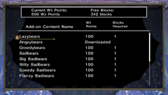

Vous devez disposer de Wii Points pour acheter un contenu supplémentaire.
Veuillez consulter la chaîne boutique Wii ou la page d'accueil du site de Nintendo pour plus d'informations sur l'achat des Wii Points.
 |
|
 |
|
Chapitres supplémentaires |
|
 |
|
 |
Hidden Tome, Vol. 1 (tome caché 1)
(300 Wii Points / Blocs nécessaires : 2)
Disponible : 09/07/2010Vous donne accès à 10 chapitres supplémentaires.
Hidden Tome, Vol. 2 (tome caché 2)
(300 Wii Points / Blocs nécessaires : 2)
Disponible : 23/07/2010Vous donne accès à 10 chapitres supplémentaires.
Lazybears (ours paresseux)
(100 Wii Points / Blocs nécessaires : 2)
Disponible : 02/07/2010
Vous permet d'utiliser les ours paresseux au lieu de vos unités normales. Ils sont moins actifs, mais il est plus facile d'accroître leur nombre.
Angrybears (ours en colère)
(100 Wii Points / Blocs nécessaires : 2)
Disponible : 02/07/2010
Vous permet d'utiliser les ours en colère au lieu de vos unités normales. Ils sont plus forts et préfèrent se battre.
Greedybears (ours cupides)
(100 Wii Points / Blocs nécessaires : 2)
Disponible : 02/07/2010
Vous permet d'utiliser les ours cupides au lieu de vos unités normales. Ils préfèrent collecter des objets plutôt que de combattre.
Badbears (abominours)
(100 Wii Points / Blocs nécessaires : 2)
Disponible : 09/07/2010
Vous donne 10 abominours en plus de vos ours normaux.
Big Badbears (gros abominours)
(100 Wii Points / Blocs nécessaires : 2)
Disponible : 09/07/2010
Vous donne 2 gros abominours en plus de vos ours normaux.
Bitty Badbears (mini-abominours)
(100 Wii Points / Blocs nécessaires : 2)
Disponible : 16/07/2010
Vous donne 5 mini-abominours en plus de vos ours normaux.
Speedy Badbears (abominours rapides)
(100 Wii Points / Blocs nécessaires : 2)
Disponible : 16/07/2010
Vous donne 15 abominours rapides en plus de vos ours normaux.
Frenzy Badbears (abominours frénétiques)
(100 Wii Points / Blocs nécessaires : 2)
Disponible : 16/07/2010
Vous donne 5 abominours frénétiques en plus de vos ours normaux.
Fire Sprites (esprits de feu)
(100 Wii Points / Blocs nécessaires : 2)
Disponible : 06/08/2010
Vous donne 4 esprits de feu en plus de vos ours normaux.
Water Sprites (esprits des eaux)
(100 Wii Points / Blocs nécessaires : 2)
Disponible : 06/08/2010
Vous donne 4 esprits des eaux en plus de vos ours normaux.
Big Fire Sprites (grands esprits de feu)
(100 Wii Points / Blocs nécessaires : 2)
Disponible : 13/08/2010
Vous donne 2 grands esprits de feu en plus de vos ours normaux.
Big Water Sprites (grands esprits des eaux)
(100 Wii Points / Blocs nécessaires : 2)
Disponible : 13/08/2010
Vous donne 2 grands esprits des eaux en plus de vos ours normaux.
Titanic Troll (troll titanesque)
(200 Wii Points / Blocs nécessaires : 2)
Disponible : 13/08/2010
Vous donne un troll titanesque en plus de vos ours normaux.
Avertissement : vous devez posséder « The Tales of Bearsworth Manor - Chaotic Conflicts » pour pouvoir profiter de ce contenu supplémentaire : il est impossible d'y jouer sans le jeu principal.
Vous devez disposer de suffisamment d'espace libre dans la mémoire de la console Wii pour télécharger ce contenu supplémentaire. Pour libérer de l’espace, transférez des données sur une carte SD ou effacez des données inutiles depuis l'écran de gestion des données.